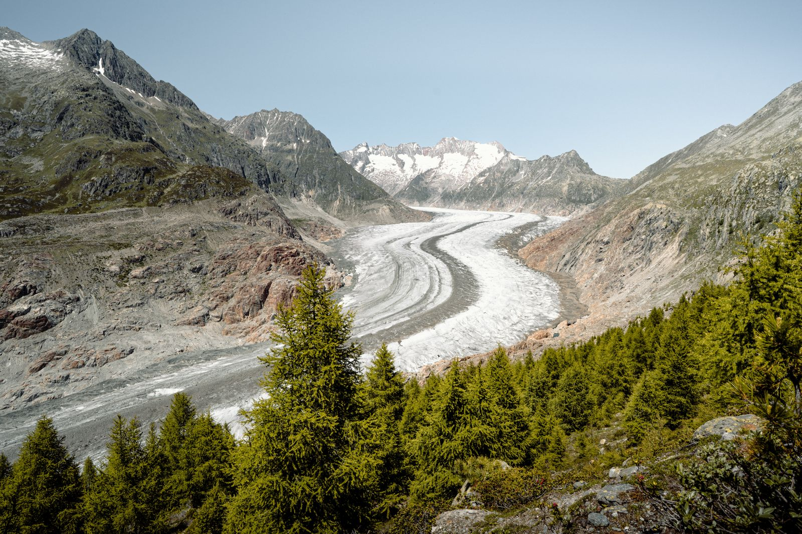

15
Glaciers under measurement
The strip above is a glacier in four bands — the same bands the Balance Explorer below works with. Enquiries: elin@strandglacier.example
Glacier mass-balance programmes · Est. 2016
I run mass-balance monitoring programmes for research institutes, water authorities and mountain regions: stakes and snow pits in spring and autumn, and at the end of every season one honest number — how much water the glacier gained or lost, in metres water equivalent, with the working shown.

The instrument · 01
A glacier's annual balance is an area-weighted mean. Each elevation band gains or loses its own amount — deep loss on the low tongue, gain on the high plateau — and the glacier-wide figure is the bands' balances weighted by the share of the glacier each band covers. Accumulation is what winter adds; ablation is what the year takes away; the equilibrium line is the altitude where the two exactly cancel. Set each band's season with the steppers and watch the account settle. Balances are in metres water equivalent (m w.e.) — the depth of water the gain or loss would make if melted, the unit every programme on this page reports in.
Printed reference — the explorer computes from exactly this table
| Band | Elevation | Area (km²) | Share of glacier | Reference season (m w.e.) | Plausible range (m w.e.) |
|---|---|---|---|---|---|
| A | 1,400–1,700 m | 1.55 | 18% | −2.40 | −3.50 … +0.40 |
| B | 1,700–2,000 m | 2.92 | 34% | −0.90 | −2.60 … +0.90 |
| C | 2,000–2,300 m | 2.67 | 31% | +0.35 | −1.40 … +1.60 |
| D | 2,300–2,650 m | 1.46 | 17% | +0.95 | −0.80 … +2.20 |
| Glacier-wide, reference season | 8.60 | 100% | −0.47 | — | |
Shares are whole percents of the mapped area; the explorer computes with the printed shares. The plausible ranges are this example glacier's, drawn from its short record and the regional series — a real programme's ranges come from its own stake history.
Steppers move in 0.05 m w.e. steps, inside the printed range for each band.
The tongue. Bare ice by July in most years; this band does most of the losing.
The long middle. The largest share of the glacier, so its season swings the total.
The shoulder. The end-of-summer snowline crosses this band in an average year.
The plateau. Firn and spring snow pits; the bank's deposit account.
One season set this way is a teaching model, kept deliberately simple: a real programme measures at stakes and pits inside each band, not one figure per band. What does not change between the model and the field is the arithmetic — and the rule printed on the About page: one year is weather; a decade is signal.
The instrument · 02
Programmes are priced from two printed rates and nothing else: a field visit at £1,850 per glacier (a two-person team, typically two days on the ice, travel to the trailhead included) and annual reporting at £1,200 per glacier (the season's balance, its uncertainty, and the updated series, in the standard international reporting format). Build the shape of a programme and the total follows. Helicopter time, where a glacier needs it, is passed through at cost with receipts — it is the one figure no honest quote can fix in advance.
Two visits is the working minimum — spring for accumulation, autumn for the end-of-season read. A third visit adds a mid-summer ablation read; a fourth suits glaciers feeding reservoirs, where the authority models inflow monthly.
An estimate from the printed rates, not a quote — a quote follows a conversation about access, and is fixed in writing before the season opens.
Programmes & prices
Every programme currently in the book, with its client type and status. A programme's status changes only in the annual report — never quietly, mid-season.
Per glacier, per year: two field visits and the annual report. The estimator above is built from exactly this — one glacier at two visits totals £4,900.
For work outside a programme: stake-network installation, a replacement survey, training a client's own field team on their glacier.
A single season's balance for one glacier, with its uncertainty stated and the method note attached. A beginning, not a series.
What moves the price: access and logistics first — helicopter hours, hut or tent nights, distance from the road head. Then glacier count, visit frequency, and the reporting standard the client must file to. The measurement itself is the cheap part; reaching the ice is not.
“Elin's series is the one document our board reads to the end. When the 2024 number had to be published as an estimate, she told us before we asked — that is why the decade line carries weight in this building.”
Ingrid Sørensen · Head of Hydrology, Fjellkraft — on the hydropower catchment programme, running since 2016.
A series has to start with a single season measured properly. Tell me the glacier, the catchment, or the question the number has to answer — the reply comes from me, not a form letter.